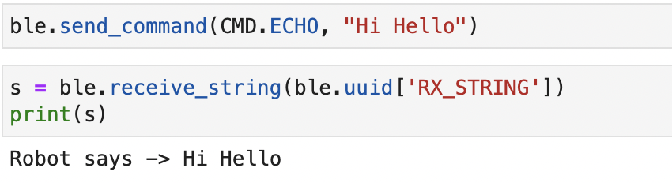
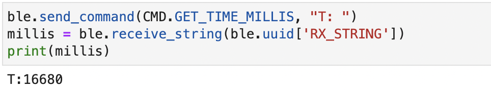
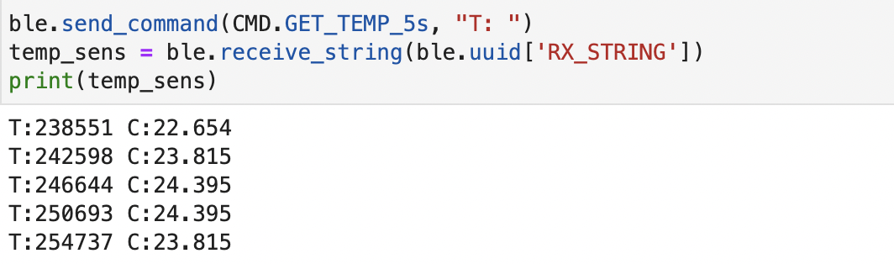

Lab 2 Bluetooth Communication
The purpose of this lab was to set up communicaton between the computer and the Artemis nano using the bluetooh stack. For the Artemis side of the communication, the Arduino IDE was used and for the computer side, Python was used through Jupyter Lab. The main task in this lab was to understand how to send, receive, and interpret commands and data.
BLE Overview
The BLE (Bluetooth Low Energy) library is a more energy efficient and optimized version of Bluetooth and is used in situations that don't need to exchange/send large amounts of data. It exists within arduino and already contains the necessary hardware support.
Artemis Side
The ArduinoBLE library was installed within the IDE and its main file, ble_arduino.ino example was the base of this lab. When running the sketch, the Artemis' MAC address was printed to the serial monitor.
Computer Side
Python was the main language that was used along with its packages such as numpy, pyyaml, colorama, nest_asyncio, and bleak. A virtual environment was also used to ensure that there were no dependency errors and each student's machine had the appropiate packages and libraries. In this case, the FastRobots_ble environment was used. These were installed using these commands:
Communication between Artemis and Computer
Checking that the MAC address printed on the Artemis and computer side was the same is how the bluetooh connectivity was verified. Within the codebase, a demo.ipynb file setup the bluetooth connection. To define the addresses, UUIDS (Universally Unique Identifiers) was used which helps differentiate between the types of data being sent. A new UUID was created and inserted in the appropiate connections file. The MAC address of the artemis was added to the connections file as well. The result of this communiction is below:
On the computer side:

On the Artemis side:

Here are a few examples of sending + receiving commands. This is how the commands are sent on the computer side:

This is how they were received on the artemis side.

ECHO Command
To add a new command, the arduino sketch, the cmd_types file, as well as the demo.ipynb file needed to be updated. For this command, the Artemis needed to "echo" the message that it had received back to the computer. was. For example, if I were to send "Hello!", the Artemis should send back Robot says -> "Hello!".
If the echo command with the text " Hi Hello" is sent as seen below, we can see that when we ask to receive the command, the same text is sent back, with the addition of "Robot says."
GET_TIME_MILLIS Command
Similarily to the echo command. I updated the necessary files to add the GET_TIME_MILLIS command. This command would send the time in milliseconds back to the computer when the command is received.
When the command is called from the python side, this is what is received:

GET_TEMP_5s Command
The GET_TEMP_5s command will use the onboard temperature sensor to send a time stamped temperature reading back to the computer which is taken once every second for five consecutive seconds.
When implementing this command, a notification handler was also incorporated to ensure that the value that was being received was the most updated reading. The implementation of the temperature sensor will be discussed in the following sections.

GET_TEMP_5s_RAPID Command
The GET_TEMP_5s_RAPID command will also use the onboard temperature sensor to send an array of rapdily sampled temperature readings. It usually sends 300-350 points. The notification handler was used for this command as well.
Notification Handler
For the earlier commands, only one variable was responsible for receiving the appropiate values. For the last two temperature commands, the temperature readings were being sent rapidly and we also wanted to know when the value is being updated.
To implement this, a global variable was used that is able to be constanly updated by built in functions - start_notify() and stop_notify(). When called, start_notify() will constantly check if the global value is being updated and will print the most updated value when needed. The function start_notify() takes in two parameters - a UUID (mentioned previously) and a callback function. A callback function is function passed into another function as an argument, which then is called inside the other function to execute its contents. The callback function takes in the uuid, and then a byte array After converting the byte array to a string value, it is then assigned to the global variable. Then the stop_notify() function is ran after you want to stop checking for new values being received.
Add more here